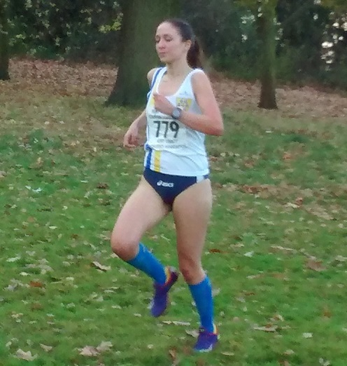

Not content with setting parkrun records, Richard Pitcairn-Knowles is also contesting the M70 category of the Kent Cross Country League this season. On Saturday 26th November at Danson Park, Richard was sixth in the race, leaving him fourth in the standings after three races.

Unlike the Kent Fitness League, the Kent League encourages the participation of elite runners, with the women's event shorter and sharper than the KFL races. This season, Jacqui O'Reilly has been one of just two Sevenoaks AC runners in the KXCL women's section, and once again she had a great run in a Kent League event, finishing 23rd/137 in the high-quality race.
There was no senior men's race on the day, with the next, final, race (for seniors only) at Foots Cray Meadows on 11th February. The full results are here. Thanks to James Graham for the photos.